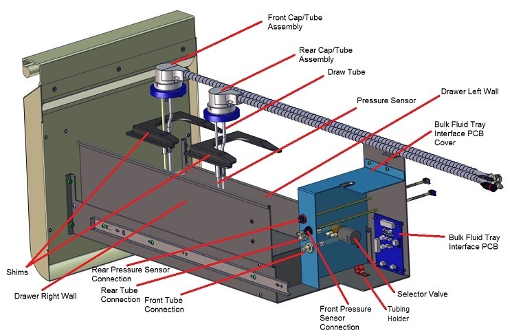
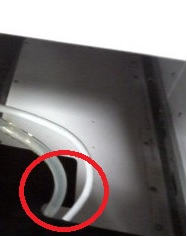
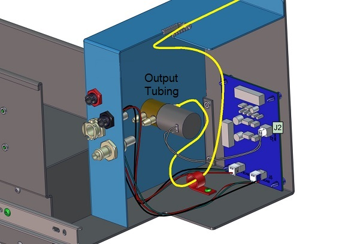
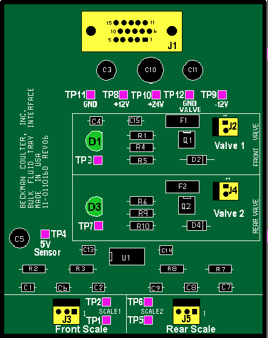
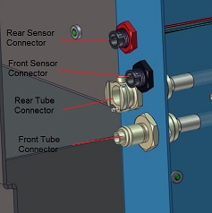
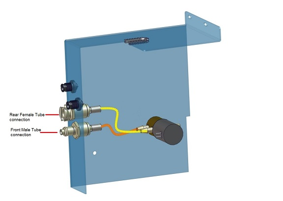
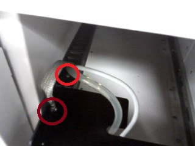

DxI Fluidics: Installing New Wash Buffer Supply Drawer
Requirements:
The requirements for installing to the new Wash Buffer Supply Drawer are:
- The DxI instrument must have:
- System Software 5.2 and above. If not, upgrade the system software.
- New Wash Buffer Supply Drawer comes with pressure sensors. Refer to Wash Buffer Supply Drawer Operating Principles document for more details.
Purpose
This procedure describes how to install the new Wash Buffer Supply Drawer.

When to Perform:
- Replacing the Wash Buffer Supply Drawer.
- Upgrading System to a new Wash Buffer Supply Drawer.
Caution: Use proper PPE when performing this procedure. Handle the Cap/Tube Assembly with care to avoid buffer contamination and damages to the cap/tube components.
- Remove the existed Wash Buffer Supply Drawer from the DxI System. Refer to Removing Wash Buffer Supply Drawer procedure to remove the drawer.
-
Install the new Wash Buffer Supply Drawer.
-
Inspect the new drawer to ensure:
- All components are attached. See Figure 1. for more details.
Important: Figure 1. shows one of the slide rails, but both rails are not coming with the new drawer. The rails on the old drawer have to be reused on the new drawer. The ground screw with star washer and the chain screws are also not coming with the new drawer. The screws and star washer have to be reused on the new drawer.
- All components are attached. See Figure 1. for more details.
-
Inspect and verify the Cap/Tube Assemblies to ensure:
- Cap/Tube Assemblies are the correct assemblies.
Note: There are two types of Cap/Tube Assembly and they are not interchangeable. Refer to Replacing Wash Buffer Cap/Tube Assembly with Pressure Sensor procedure for more details.
- Cap/Tube Assemblies have no broken or damaged caps, draw tubes, sensor tubes, clip holders, sensor connectors, and tubing connectors.
- Cap/Tube Assemblies are working properly by performing resistance checks. Refer to Replacing Wash Buffer Cap/Tube Assembly with Pressure Sensor procedure for more details.
- Cap/Tube Assemblies are the correct assemblies.
-
Install the slide rails from the old drawer to the new drawer.
Note: Both rails have a fixed screw hole toward the front side and two adjustable screw holes toward the rear side.Note: Install the screw to the fixed hole first and do not tighten the screw until the other screws are aligned and installed. The rails have to be pushed up to align the screws on the adjustable holes to the screw on the fixed hole.
- Slightly insert the new drawer half way in.
-
Gently loose the Bulk Fluid Tray Interface PCB cover by removing four screw to gain access to the Selector Valve and Bulk Fluid Tray Interface PCB.
Note: Do not pull the PCB cover out to avoid damages to valve's connection wires, sensors' connection wires, and PCB's sensor connector pins.

-
Route the serial cable through the cover top open gap to the Bulk Fluid Tray Interface PCB.

-
Connect the serial cable from the instrument to J1 connection on the PCB.
Note: Ensure to screw in the two screws on the serial cable to J1 connection on the PCB. Refer to the image of the Bulk Fluid Tray Interface PCB on substep K. for J1 connection for more details.
-
Route the Wash Buffer output tubing from the instrument through the cover top open gap and the tubing holder.
Note: If the Wash Buffer output tubing is short and cannot be routed through the tubing holder, then route the serial cable through instead.
-
Connect the output tubing to the Selector Valve output connection.

- Remove the clamp on the Wash Buffer output tubing.
-
Put the PCB cover back in place.
Note: Before putting the cover back in place, verify components are properly connected to the Bulk Fluid Tray Interface PCB.

- Serial cable connects to J1 on PCB.
- Selector Valve power connector connects to J2 on PCB.
- Bulk Fluid Tray Interface PCB Cover designated inputs are properly connected to the PCB and the selector valve.

- Rear sensor connector (has red color coded nut and three small pin holes) connects to J5 on PCB.
- Front sensor connector (has black color coded nut and three small pins) connects to J3 on PCB.

- Rear (female) tube connector connects to top valve input connection.
- Front (male) tube connector connects to bottom valve input connection.
- Screw in the Chain to the drawer.
-
Screw in the Ground Strap to the drawer.
Note: Ensure the star-washer is installed with the screw.

-
Connect the Cap/Tube Assemblies to the designated inputs on the Bulk Fluid Tray Interface PCB.
Note: Handle the Cap/Tube Assembly with care to avoid buffer contamination and damages to the cap/tube components.Note: Ensure the Cap/Tube Assemblies are properly connected.
- Rear Cap/Tube Assembly connects to the red rear sensor connector and rear tube connector.
- Front Cap/Tube Assembly connects to the black front sensor connector and front tube connector.
-
Route the tubing/sensor connectors through the plastic tubing holders on the rear side of the right drawer wall.

- Insert new Wash Buffer containers into the drawer.
-
Slide in the Shims to both containers' necks.

- Gently screw in the Cap/Tube Assemblies to both containers.
-
Inspect the new drawer to ensure:
- Restore the power to the motors by turning on the switch on the Power Distribution PCB labeled "All DC power (except CPU and reagent cooler)."
-
Close the upper-right cover.
Important: If this is an upgrade to the new Wash Buffer Supply Drawer, then go to the next step. If this is a replacement of the new Wash Buffer Supply Drawer, then skip the next step.
-
Configure the AU settings.
For Windows 8:
-
Open a remote desktop connection to the AU.
- Press the Windows key, select Remote Desktop Connection icon or type remote and open the Remote Desktop Connection program.
- Type 192.168.2.4 into the Computer field and select Connect.
- Enter user for the User Name and tech for the password if prompted.
- If prompted at the RDS warning screen, check the box for “Don’t ask me again for connections to this computer” and select
Yes.
Note: For Windows 8, the default console IP address is 192.168.2.3 and the AU IP address is 192.168.2.4. Neither IP address changes during the software load process.
-
Shut down the AU Object program.
- Right click on the task bar and select Task Manager.
- In the Task Manager box, click on Processes, select AUobj Module, and click on End Task in the bottom corner of the box.
-
In the AU desktop, find specific.ini file and make a copy of the file.
- Double click on Computer or File Explore and select Local C: drive or AU_PC (C:) > AU > specific.ini, right-click on the specific.ini file, and then select Copy.
- Right-click Local C: Drive or AU_PC(C:), and then select Paste. A copy of the specific.ini file is placed on AU_PC(C:).
-
Double-click to open the specific.ini file in the
Local C: Drive or AU_PC(C:) >> AU folder.
Note: Open the specific.ini file in Notepad program.
- Select Edit > Find or press [Ctrl] + [F], and enter the value in the Search For column from the table below to the Find what: box and click Find Next.
-
Change the value as indicated in the
Change column below.
Note: "Enable Liquid Level Sensor" value has to be searched and changed twice, one is for the front pressure sensor and the other is for the rear pressure sensor.
Search For Change Wash Buffer Level Sensor 0 to 1 Wash buffer critical level 10 to 5 Enable Liquid Level Sensor No to Yes Enable Liquid Level Sensor No to Yes - Save the changes by selecting File > Save.
- Close the specific.ini file and the Explorer window.
- Double-click the AUObj.exe icon on the desktop to restart the AU program.
For Windows XP:
- From the console PC, select Start > Programs > Administrative Tools > Remote Desktop Connection to AU PC. This launches desktop sharing.
- Shut down the AUObj.exe program.
- Open My Computer on the desktop. Select C: > AU, right-click on specific.ini, and then select Copy.
-
Right-click on
AU, and then select
Paste.
Note: A copy of specific.ini file is created.
-
Open the
specific.ini file.
Note: Open the specific.ini file in Notepad program.
-
Select
Edit > Find or press
[Ctrl] + [F], and enter the value in the
Search For column from the table below to the
Find what: box and click
Find Next. Change the value as indicated in the
Change column below.
Note: "Enable Liquid Level Sensor" value has to be searched and changed twice, one is for the front pressure sensor and the other is for the rear pressure sensor.
Search For Change Wash Buffer Level Sensor 0 to 1 Wash buffer critical level 10 to 5 Enable Liquid Level Sensor No to Yes Enable Liquid Level Sensor No to Yes - Save the changes by selecting Files > Save.
- Close the specific.ini file and the Explorer window.
- Launch the AUObj.exe program on the desktop.
-
Open a remote desktop connection to the AU.
-
Initialize System.
Note: If step 5 was performed and System is in ready mode, then initializing the System is not required.
-
Calibrating the Wash Buffer Supply Drawer. Refer to
Calibrating Wash Buffer Supply Pressure Sensors procedure to perform the calibration.
Note: If the sensor calibration fails, then confirm that the selector valve cable is connected to J2 and that the front / rear tubes are correctly attached to the valve.
-
Close the Wash Buffer Supply Drawer.
Note: Ensure the Cap/Tube connectors are not pinched when closing the drawer.
- Prime System and check for leaks. Refer to Verification of Service Repair document for more details.